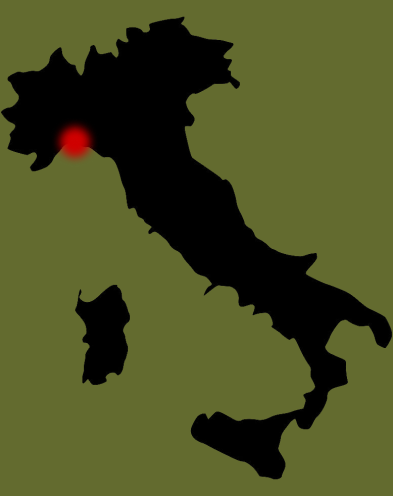

Penne

Penne origins
Penne is a type of pasta that originated in Italy, specifically from the Liguria region. The name "penne" is derived from the Italian word for "pen," referencing its distinctive quill-like shape with angled ends. This design was made possible in 1865 when Giovanni Battista Capurro, a pasta maker from San Martino d'Albaro (Genoa), patented a diagonal cutting machine that created this unique form without crushing the pasta.